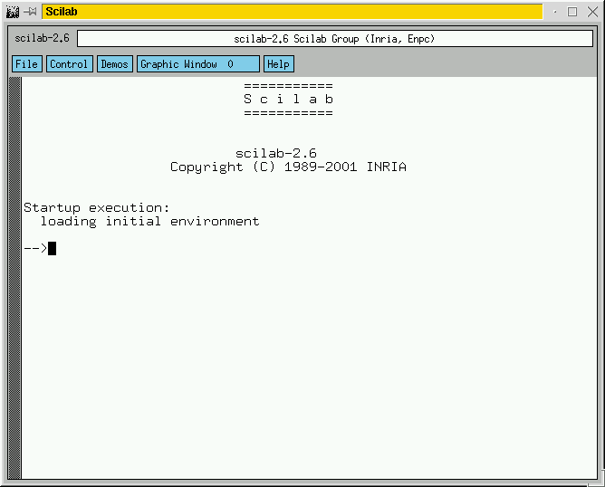
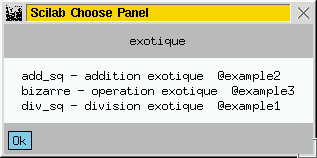
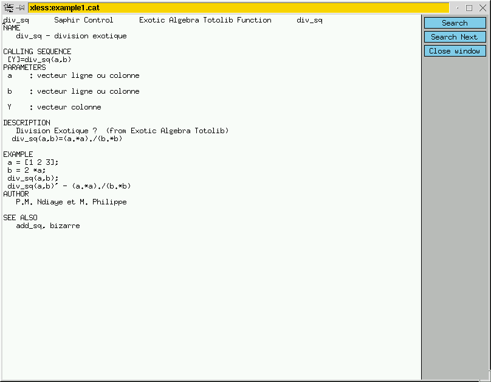

Tous ces articles en ligne sur Scilab ont été écrits pour
LINUX MAGAZINE FRANCE par les
développeurs du Scilab Group. Les articles sont sous
licence FDL (Free Documentation
Licence)
Les Contributions au Logiciel Libre Scilab
Papa Momar Ndiaye & Matthieu Philippe
Société Saphir Control
s/c INRIA Rocquencourt BP105,
78153 Le Chesnay Cedex, France
www.saphir-control.fr
1 Introduction
Scilab est un logiciel libre et open source de calcul scientifique
développé par l'INRIA et l'ENPC. En particulier, Scilab offre de
large possibilités d'interfaçage avec d'autres codes pour piloter
vos propres applications et aussi des facilités pour rajouter vos
bibliothèques de manière permanente ou temporaire (Cf. Linuxmag
numéros 15 et 26). Autour de Scilab s'est organisée une large
communauté d'utilisateurs qui participent à son évolution
notamment en mettant en libre accès sur le site Scilab leurs propres
contributions. Ces contributions a priori indépendantes de la version
officielle supportée par le Scilab Group témoignent de
l'activité autour de Scilab ainsi que de la variété des
domaines d'utilisation de ce logiciel (plus de 35 contributions disponibles
à l'URL
http://www-rocq.inria.fr/scilab/contributions.html : liste
donnée en annexe). Du point de vue l'utilisateur, cela revient à
greffer une bibliothèque de macros à Scilab avec la
particularité que le support de cette bibliothèque reste à
la charge du développeur de la contribution.
Cet article présente les grandes lignes de l'installation d'une
contribution, et montre les principales étapes de la construction d'une
contribution : en fait, il s'agit de faire rentrer vos propres Toolboxes dans
une architecture suivant une normalisation proposée par le Scilab Group.
Libre à vous ensuite de soumettre le résultat au Scilab Group
pour en partager le contenu et aussi la maintenance avec tout un réseau
d'utilisateurs. Pour aller plus loin, consulter le Guideline proposé sur
le site Scilab (fichier
GUIDELINE.tar.gz, téléchargeable depuis l'URL
citée plus haut).
2 Installation
Les contributions se téléchargent par ftp depuis la rubrique
Contributions du site Scilab (http://www-rocq.inria.fr/scilab). Elles se présentent
sous forme d'archive, typiquement un fichier d'extension ``.tar.gz'' à
décompresser et extraire. Ensuite viennent l'installation et le
chargement de la contribution qui se font dans la fenêtre Scilab. En
fait, toutes ces opérations (extraction de l'archive, installation et
chargement de la contribution) peuvent s'effectuer depuis la fenêtre
Scilab au prix de trois lignes de commandes seulement ! Comme illustration de
cette simplicité, prenons l'exemple de Slicot qui est un package de
méthodes numériques pour le design et le contrôle de
systèmes développé par le groupe NICONET (http://www.win.tue.nl/niconet/). Naturellement, pas question
d'entrer dans le détail du contenu, il est juste question de voir que la
complexité de ce package n'alourdit nullement son installation et son
chargement. Nous décrivons ci-après le processus comple en
supposant que vous avez déja téléchargé le fichier
slicot-1.0.tar.gz. Il suffit alors de lancer Scilab depuis le
même répertoire

et de procéder en trois étapes, comme suit.
- Extraction de l'archive
-->unix('tar xzf slicot-1.0.tar.gz') //extraction : commande unix
ans =
0.
- Positionnement dans le répertoire nouvellement crée et
installation de la contribution en lançant le script
builder.sce
-->chdir slicot-1.0
ans =
0.
-->
-->exec("builder.sce") // installation
-->mode(-1)
Be patient, this may take a while
making all in slicot
making all in auxiliary
Warning :redefining function: compile
making all in slicot-scilab
-->
Cette opération d'installation est à exécuter une fois
pour toutes.
- Chargement de la contribution en lançant le script
loader.sce
-->exec("loader.sce") // chargemant
-->mode(-1)
linking files
/home/saphir-control/slicot-1.0/src/slicot-scilab/slicot_gateway.o
/home/saphir-control/slicot-1.0/libs/slicotlib.a
/home/saphir-control/slicot-1.0/libs/slicotaux.a
to create a shared executable
shared archive loaded
Linking slicot_gateway
Interface 0 slicot_gateway
-->
Après ces manipulations élémentaires, vous pouvez utiliser
la nouvelle contribution fraîchement installée. Cependant,
à chaque nouvelle session Scilab, il vous faudra à nouveau
charger la contribution en lancant le loader.sce. Pour un chargement
automatique, vous devez mettre la commande de chargement dans votre fichier
.scilab.
3 Construire votre propre contribution
3.1 Architecture d'une contribution
- Un fichier d'installation : script Scilab
builder.sce exécuter une seule fois par l'administrateur.
- Un fichier de chargement de chargement des fonctions dans
l'environnement Scilab : script Scilab loader.sce à
exécuter par l'utilisateur.
- Un fichier README décrivant le contenu de la
contribution ainsi que la procédure d'installation.
- Un répertoire src contenant les sources des
routines C ou Fortran ainsi qu'un fichier C ou Fortran contenant la routine
d'interface avec Scilab (Cf. Linuxmag numéro 26)
- Un répertoire macros contenant les macros Scilab.
- Un répertoire examples contenant les examples.
- Un répertoire man contenant les pages du manuel de
vos fonctions. Un fichier whatis et un fichier *.cat sont
nécessaires pour chaque fonction.
- Un répertoire doc contenant la documentation aux
formats ps, pdf, html, tex.
On retrouve cette architecture dans le répertoire slicot-1.0
crée plus haut
[saphir-contol slicot-1.0]: ls
Makefile builder.sce libs/ macros/ src/
texput.log Makefile.mak doc/ loader.sce man/
tests/
3.2 Construction des fichiers d'installation et des pages de
help
En pratique, il suffit de construire les fichiers builder.sce,
loader.sce et les pages de manuel. Le fichier builder.sce est
un script de commandes Scilab qui réalise l'installation complète
de la contribution :
- · création
des Makefiles si nécessaire ;
- · lancement des
commandes de compilation ;
- · création des
librairies Scilab, si nécessaire ;
- ·
éventuellement création de la macro Scilab loader.sce.
Typiquement, le fichier builder.sce peut donc être divisé
en deux parties :
- une partie spécifique contenant les définitions des noms de
librairies ;
- une partie générique contenant :
- des instructions de positionnement de Path,
- des instructions permettant la génération automatique des
Makefile et la compilation des fichiers Fortran et C,
- des instructions permettant la génération de la librairie de
macros Scilab,
- et éventuellement des instructions permettant la
génération du fichier loader.sce.
Le fichier loader.sce permet à l'utilisateur de charger la
contribution dans son environnement. Il contient les instructions pour rajouter
des interfaces temporaires dans Scilab ainsi que des pages de help et des
démonstrations. Les helps en ligne se construisent à partir de
fichiers nroff avec l'extension .man dont la compilation se
fait avec la commande Scilab formatman. Des modèles-types sont
disponibles dans les distributions de Scilab (cf.
répertoire : scilab-2.6/examples/man-examples. Des
modèles de fichiers loader.sce et builder.sce à
adapter à vos applications sont accessibles sur le site Scilab
(télécharger le fichier et décompresser GUIDELINE.tar.gz.
3.3 Un petit exemple
Supposons juste pour illustrer que nous ayons besoin de rajouter un ensemble
d'opérations particulières sur des matrices-lignes ou
matrices-colonnes du genre : add_sq : (a, b) ® a.*a + b.*b et div_sq :
(a, b) ®
(a.*a)./(b.*b).
On dispose au départ de la routine C
#include "/usr/local/scilab-2.6/routines/machine.h"
int F2C(ext1c)(n, a, b, c)
int *n;
double *a, *b, *c;
{
int k;
for (k = 0; k < *n; ++k)
c[k] = a[k]*a[k] + b[k]*b[k];
return(0);
}
et de la routine Fortran
subroutine fsom(n,a,b,c)
real a(*),b(*),c(*)
do 1 k=1,n
1 c(k)=a(k)*a(k)/(b(k)*b(k))
end
qu'on veut piloter par deux fonctions Scilab de sorte qu'elles traitent
indifférement les vecteurs-lignes ou vecteurs-colonnes. Evidemment, il
s'agit d'un exemple exotique pour ne pas dire bidon, mais admettons que l'on en
ait besoin.
Nous allons donc construire une contribution qui va rajouter à scilab,
deux primitives (add_square et div_square) et une librairie
de nom totolib contenant les trois functions add_sq.sci,
div_sq.sci et bizarre.sci. Voici la démarche pratique.
- Création d'un répertoire src dans lequel on copie
les fichiers source C et Fortran.
- Utilisation de intersci, par exemple, pour générer
une interface commune pour les fichiers C et Fortran.
- Création du répertoire macros dans lequel on met
les 3 fonctions Scilab : add_sq.sci, div_sq.sci et
bizarre.sci.
- Création du répertoire man dans lequel on met les 3
trois fichiers-sources du help : add_sq.man, div_sq.man et
bizarre.man. Ces fichiers seront compilés lors de
l'exécution du builder.sce qui lance la commande Scilab
formatman.
- Construction du builder.sce et du loader.sce en adaptant
celui donné dans le
GUIDELINE.tar.gz.
- Installation de la contribution avec le builder.
- Chargement de la contribution avec le loader.
On obtient alors ce qui suit.
-->;exec("builder.sce");
Building PETITE ALGEBRE
Building Completed
Manuel Installed
-->;exec("loader.sce");
linking files /home/saphir-control/example/src/exf.o
/home/saphir-control/example/src/ex1c.o
/home/saphir-control/example/src/ex2f.o
to create a shared executable
shared archive loaded
Linking exf
Interface 0 exf
PETITE ALGEBRE loaded
Primitive add_square added
Primitive div_square added
Very Exotic library totolib loaded
Functions files location :/home/saphir-control/example/macros/
add_sq bizarre div_sq
Les nouvelles fonctions Scilab add_sq.sci, div_sq.sci et
bizarre.sci s'utilisent maintenant comme toutes les autres fonctions
Scilab :
-->x = [1 2 3]
x =
! 1. 2. 3. !
-->y = 2 *x
y =
! 2. 4. 6. !
-->div_sq(x,y)
ans =
! 0.25 !
! 0.25 !
! 0.25 !
-->div_sq(x',y')
ans =
! 0.25 !
! 0.25 !
! 0.25 !
-->add_sq(x, 2*x)
ans =
! 5. !
! 20. !
! 45. !
On a aussi accès au pages du manuel puisque la commande Scilab
apropos exotique ouvre la fenêtre graphique suivante

et en clicquant sur div_sq on obtient la fenêtre de help
suivante

qu'on aurait pu ouvrir avec la commande help div_sq.
Vous l'aviez compris : l'exercice était un poncif. L'ensemble des
sources nécessaires pour le refaire est néanmoins fourni
ici.
3.4 Soumission d'une contribution
Il suffit de :
- fabriquer une archive contenant votre contribution et de remplir un
fichier lsm (cf
http://metalab.unc.edu/pub/Linux/LSM-TEMPLATE) ou alors un
fichier texte contenant les informations suivantes :
- Title:
- Version :
- Description :
- Author:
- Maintained-by:
- Maintained-at:
- Platforms:
- Copying-Policy:
- Keywords:
- déposer le tout par ftp à l'adresse :
ftp://ftp.inria.fr/INRIA/Projects/Meta2/Scilab/incoming/
- envoyer un mail à Scilab@inria.fr pour information.
4 Annexe : liste des contributions
- ANN : conception de réseaux de neuronnes.
- CmapUtility : Manipulation des cartes de couleurs.
- DYNOPTIM : Discrete time optimal control problems.
- EMACS : Mode scilab sous emacs.
- ENRICO : Fonctions graphiques de haut niveau pour l'imagerie.
- EVOL : Evolution strategies.
- FABBRI : Fonctions graphiques de haut niveau pour l'imagerie.
- FAULT_D : Détection de pannes.
- FEM_Post : Finite Element Post Processing.
- FISLABFuzzy : Commande à logique floue.
- FRACLAB : Manipulation de Fractales.
- FREEFEM : Eléments finis 2d.
- FSQP : Interface Scilab-FSQP pour l'optimisation.
- FISLAB : Fuzzy logic inference.
- GENFILT : Code assembleur pour l'implémentation de filtre
IIR.
- GUIDELINE : Guide pour la construction de contributions.
- HMM : Chaînes de Markov.
- IMAGE : Lecture et l'écriture d'images aux formats PBM,
PPM ou PGM.
- Interactive documents with Scilab : Interface pour appeler
Scilab à partir d'un document PDF ou HTML.
- LABOSTAT : Fonctions basiques pour les statistiques.
- LIPSOL : Programmation Linéaire par points
intérieurs.
- Mac : Macintosh 2.1.1 version.
- MAXPLUS : Algèbre Maxplus.
- MODAL : Output modal analysis and diagnosis
- NETBSD : Support pour NetBSD.
- NURBS : Nurbs library.
- OLDSAVE : chargement des fichiers sauvegardés avec des
vielles version s de Scilab.
- Plotting library : Fonctions émulant le plot()
de Matlab.
- POLYTOOL : Manipulation de polynômes.
- RAYPP : Quick travel-time calculations of P-P reflections for
flat earth.
- SCIGRAPH : Manipulation de graphes METANET.
- SLICOT : Interface with SLICOT.
- STIXBOX : Package de statistiques pour l'agregation de
mathématiques.
- TELECOM : Simulation des chaînes de transmission numrique
de télcommunications.
- TIME SERIES PLOTTING.
- TKGUI : Fonctions et IHM utilisant TCL/TK.
- XPM : Génération d'images bitmap XPM contenant des
pixels.
This document was translated from LATEX
by HEVEA.